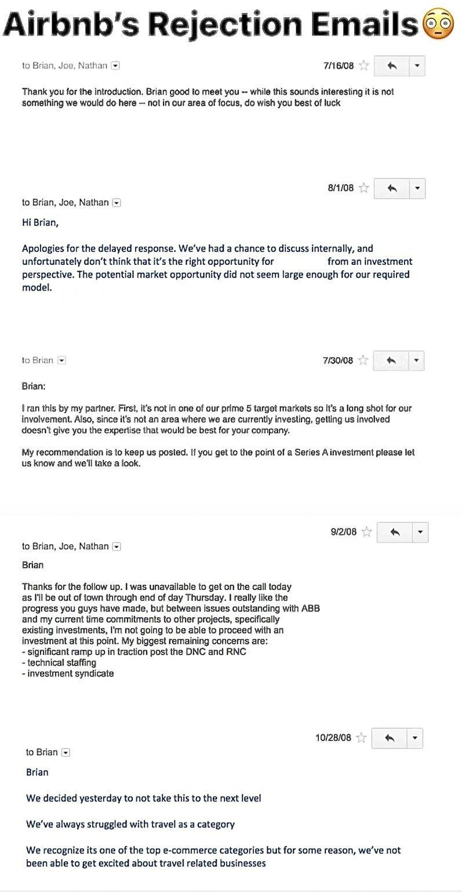
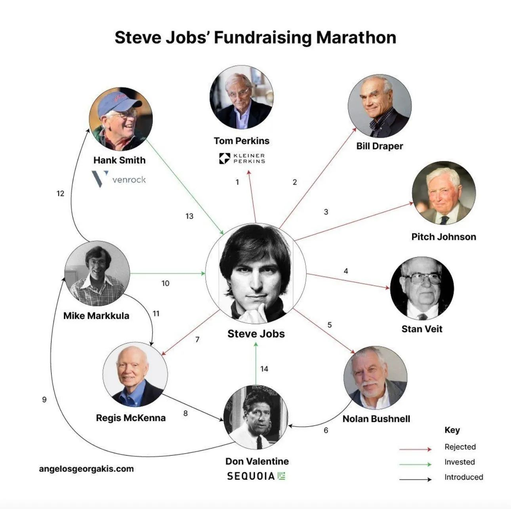

Never accept defeat
When you’re facing rejection after rejection—whether from clients, investors, or any other part of your journey—it can be easy to feel like giving up is the only option. But often, the real turning point isn’t about getting every “yes” or a perfect outcome. It’s about surviving long enough to get that first positive response. That first “yes” could return all that past “no” and turn them into “yes”.
Through my personal experience, a few stories from my friends, and some famous stories from the internet, we see that sometimes you might feel like giving up. You keep working, sending messages, and waiting for a response—two weeks, four weeks, two months, three months—and you start to think, “Maybe they’re right. Maybe I should stop.” But no, the answer is clear: you should never accept defeat. You should always claim victory and keep fighting for it.ybe you should stop. But, no, the answer is you should not accept defeay, you shoul always claim victory, fight for it.
The Power of Persistence, or Doubt Is the Devil
It’s always better to explain things through examples. So, here are a few from my own life, and lessons I’ve learned that are good to remember.
Story One
I spoke with a friend who was responsible for a whole region at Revolut, but he left the company to start his own venture. He had been meeting with investors and, after a long, difficult process, finally raised $3 million for his idea. It wasn’t an easy path—many people would have given up, either at the beginning or somewhere in the middle. He worked for three months before getting his first “yes” at the end of that period. He shared his CRM with me, and I saw that he had over 100 meetings, emails, and calls, with many responses like “we’re not interested.” But after those three months, he got a “yes” from one fund, and in the following week, he secured a $3 million pre-seed round. He didn’t let himself be defeated. He kept pushing, claiming victory when he reached this milestone. And I believe that with this mindset, he’ll succeed in every stage and overcome every problem moving forward—ultimately making his venture a success.
This shows us that sometimes, it’s not about you or your idea—it’s about finding the right person. You just need to keep going until you find that “yes.”
How I usually work with it, how it looks like
For example, I approach my own goals like a marathon. When I’m pursuing something or deeply interested in it, I work 13–17 hours a day, seven days a week, testing, executing, and refining every possible hypothesis to find the one that works. Sometimes I do this for months before I see real growth. It’s only when that breakthrough happens that I adjust my strategy a little, and continue working smarter and more strategically from that point onward.
Airbnb’s Journey
Take Airbnb, for example. They also faced many rejections. In fact, seven investors turned them down: five outright rejected them, and two simply ghosted them. It’s a classic early-stage fundraising story—rejections, unanswered emails, and doors that don’t open. But Brian Chesky didn’t stop. He kept pushing, and eventually, Airbnb became one of the most successful companies in the world.

The takeaway here? Don’t take the “no”s personally. Every rejection is just one step closer to the right “yes.”
Steve Jobs and His Rejections
Steve Jobs faced rejection too. Not just once, but multiple times by different people.
Tom Perkins and Eugene Kleiner, of Kleiner Perkins, wouldn’t even take a meeting with him.
Bill Draper called Jobs and Wozniak “arrogant.”
Stan Veit turned down a chance to invest $10,000 for 10% of Apple because he didn’t trust Jobs’ appearance.
And Nolan Bushnell rejected a chance to buy one-third of Apple for $50,000.
But Bushnell introduced Jobs to Don Valentine. And that’s when everything changed.
Valentine wasn’t convinced at first but introduced Jobs to Mike Markkula, who saw the vision and invested $91,000, becoming Apple’s first angel investor. Markkula then helped Jobs secure further investment and put Apple on the map.

The Power of the First “Yes”
The lesson here is clear: Rejection doesn’t mean you’re not good enough or that it’s time to quit. The real challenge is to keep going long enough to find that first “yes.” It might take two weeks, two months, or even longer. But the more further you go, more experienced you become, more connections you make, more opportunities you find, the faster you will get that first “yes” in your life. Sometimes, you face obstacles that aren’t just about rejections from clients. You might deal with problems in your team, motivation issues, and other challenges. In these moments, it’s important to stay calm, keep pushing, and focus on one goal at a time. Don’t try to do too many things at once and expect them all to succeed right away. When we was building our B2B EdTech SaaS product, we was building withuout any positive feedback about a half a year. But the effort we put in at the beginning eventually started paying off, and things began to work like a snowball. Later, we sold the product and attracted more investment for another venture. It’s just like growing a carrot in your garden—you have to wait for it to grow before it gives you results.
So, no matter how many rejections or setbacks you face, keep pushing forward. Sometimes, all you need is that first answer. Then, everything else will follow.